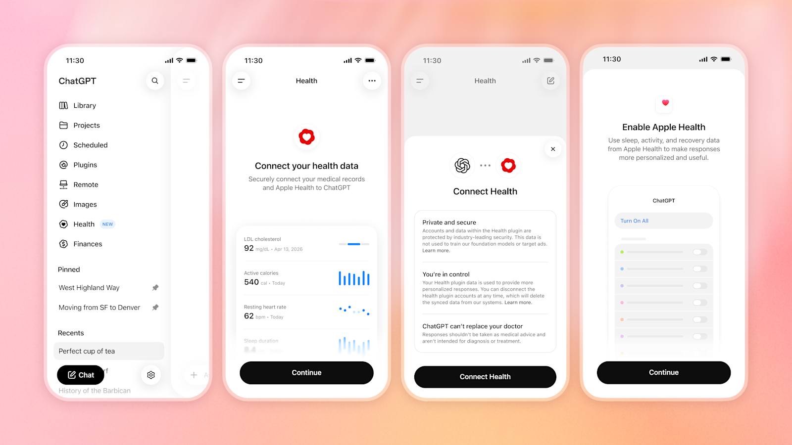
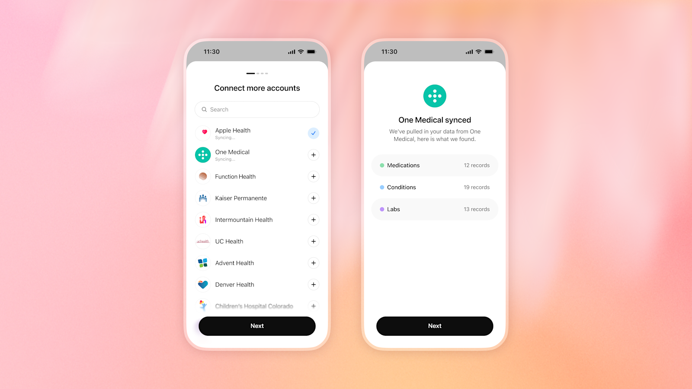
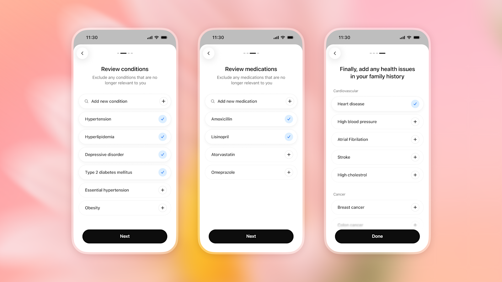
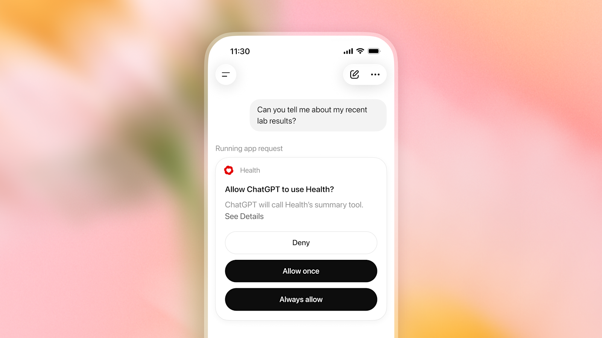
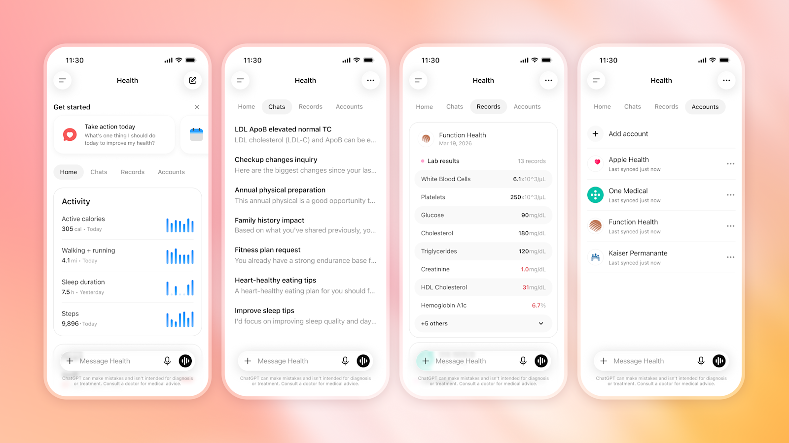

01Open Health from the sidebar
On web or iOS, sign in and find Health in the left sidebar. You need to be 18 or older and US-based; Apple Health sync needs iOS.
Connect Apple Health and your medical records the right way, not just the fast way.
Takes about five minutes if you already know your provider portal.
On web or iOS, sign in and find Health in the left sidebar. You need to be 18 or older and US-based; Apple Health sync needs iOS.
Tap Connect Health, review the three permission notes OpenAI shows before you agree (training/ad exclusion, disconnect anytime, "can't replace your doctor"), then choose Apple Health or search your provider.

If your provider uses Epic, Oracle Health, One Medical, or another listed system, link it the same way. You're sent through your provider's own login; ChatGPT never sees your portal password.

Each one is a real, checkable control, not a general privacy tip.
Connecting a provider record is not all-or-nothing. Setup walks you through review screens for conditions, medications, and family history, each already pre-checked based on your synced records, with an option to uncheck or exclude anything that's outdated or wrong. Most people tap "Next" through all three without reading a single row.

Since the July 2026 update, a question in ANY conversation, not just inside the Health tab, can trigger a live prompt: "Allow ChatGPT to use Health?" with three choices, Deny, Allow once, or Always allow. Tapping Always allow here is the real behavior change from the original January pilot: every future chat can pull in your health data without asking again, until you revoke it.

General Settings has data controls for ChatGPT overall. Health has its own, separate ones, and its own Accounts tab listing every connected source with a "last synced" time. Disconnecting an account there deletes the synced data from OpenAI's systems, per OpenAI's own onboarding text.

Health keeps its own memory, separate from the rest of ChatGPT. You can view or delete Health memories independently, inside Health or under Settings → Personalization. Most people never open this.
Context from your regular chats, like a recent move or a lifestyle change, can flow into a Health conversation to make it more relevant. Health information never flows back out into your other chats. Worth confirming this matches what you'd expect before you rely on it.
OpenAI: "Launching Health in ChatGPT," 23 Jul 2026 (primary source for this guide)
OpenAI: "Introducing ChatGPT Health," 7 Jan 2026 (original pilot)
Every claim above traces to these two posts. This guide is written by ARKIV AI and is not an official OpenAI document.